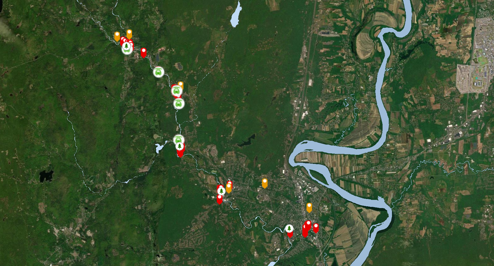
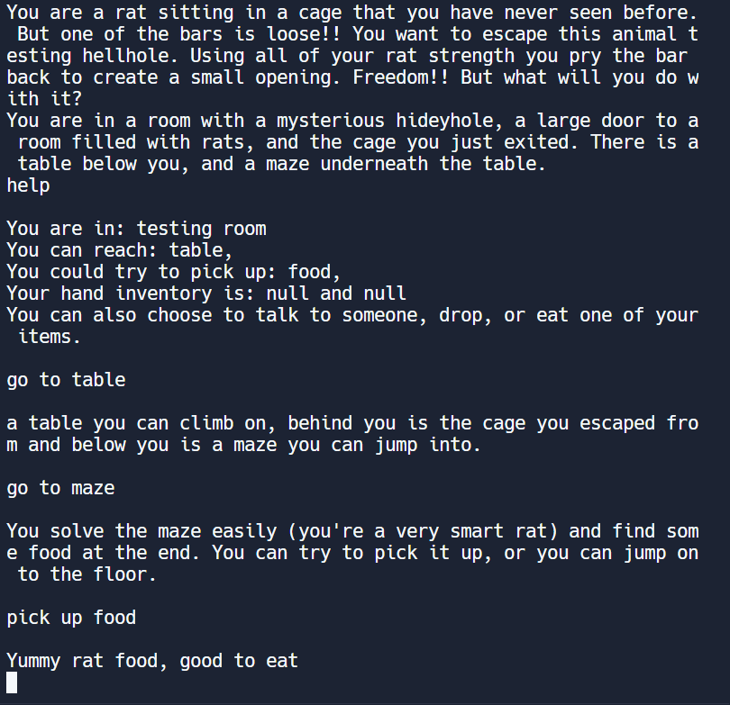

Projects
Data Science Project Portfolio in RLinked Here |
Mill River Flood 150th Commeration StoryMap Linked HereProduct of my Special Studies in the Landscape Studies Department. Collaboration with Historic Northampton to commerate the 150th anniversary of the Mill River Flood affecting the Pioneer Valley. |
3D Marshmallow Animation Loop Linked Here
Linked Here
As a final for my Computer Graphics course, I created a 3D animation Loop using WebGL JavaScript of a marshmallow jumping to crush a building. The marshmallow, flower, and building objecter were created in Blender. |
Text-Based Escape Room Game Linked HereImagine yourself as a lab rat trapped in your cage, when an opportunity to escape presents itself. This text-based game allows a user to navigate through the lab facility and escape, with ability to interact with items and NPCs encountered. Try to escape! This project is implemented in Java utilizing Guava to demonstrate understanding of graphs and other data structures and object-oriented programming principles. |
Editable Visual Calendar Linked Here
Linked Here
An editable visual calendar or quick and easy scheduling visualization. Users can indicate a category of event, day, and time. There is also ability to read from and write to a file. Made to demonstrate knowledge of Python Graphics Library and class structure. |